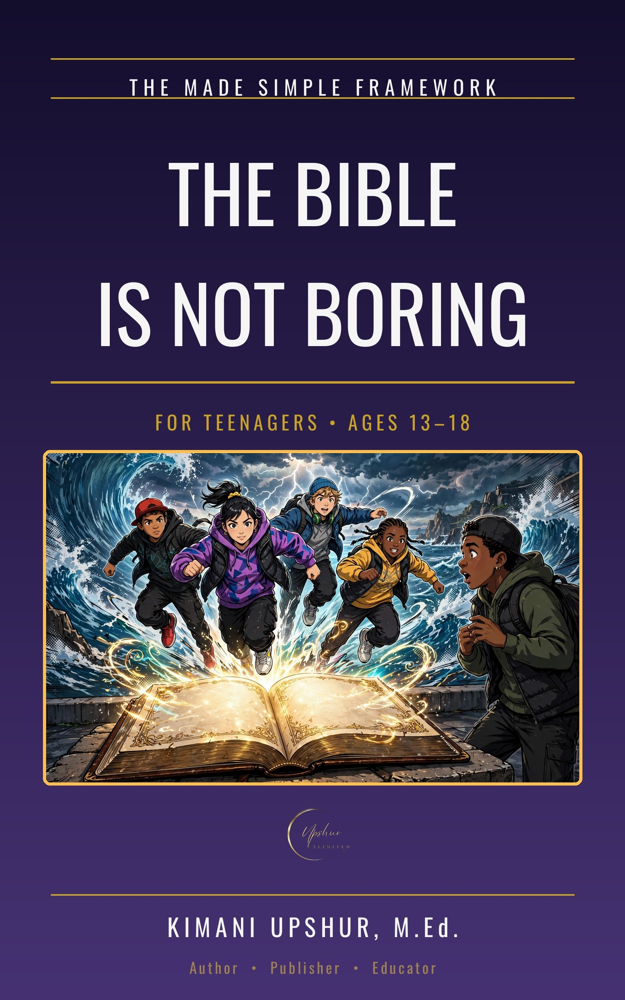

Home / Kids & Teens / Teenagers

The Bible Is Not Boring
How to Actually Read It and Get It
by Kimani Upshur, M.Ed.
The Bible Is Not Boring: How to Actually Read It and Get It starts from an honest admission — 'boring' is a diagnosis, not a verdict — and shows teen readers how to actually read the Bible. Its twelve short chapters, about ten minutes each, run in three movements. Why Bother makes the case: sixty-six books tell one story, written for people exactly like you, and God's words do not come back empty. How to Read It gives the method: start where it is alive, use a fifteen-minute pattern of asking, reading, questioning, and praying it back, and know what to do when you don't get it or don't feel it. Keeping Going covers plans that survive February, reading with others, letting the Book read you, and the Book that reads back. Every chapter opens with a Bible verse and closes with one concrete step, Your move this week. The book closes with a personal invitation to give your life to Jesus Christ, including the Sinner's Prayer. Written from a Christian worldview — Scripture first.
- Publisher
- Upshur Unlimited, LLC
- Author
- Kimani Upshur, M.Ed.
- Format
- Ebook
- List Price
- $4.99 USD
- Language
- English
- Audience
- For Teenagers • Ages 13–18
More Teenagers Books
Explore the full collection of books for teenagers.